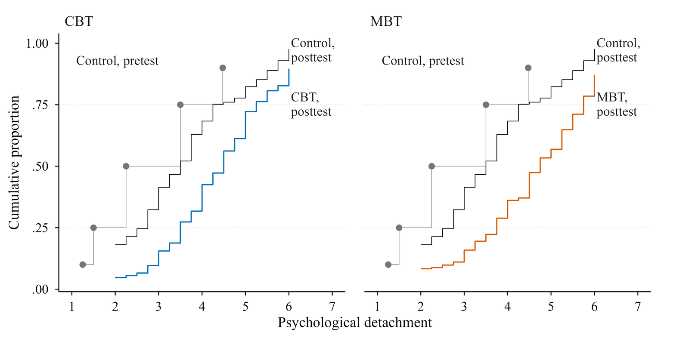
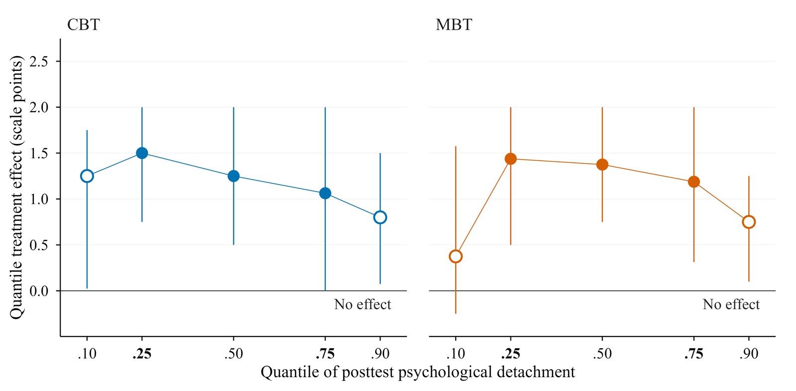

← Publication page · mjmonnot.github.io
Recovery from work · Research companion
Two six-week recovery trainings each helped employees mentally switch off from work, and neither clearly favored those who started lowest or highest.
A prespecified analysis of a randomized trial run by a German research team. Employees who volunteered for recovery training were assigned at random to a cognitive-behavioral program, a mindfulness-based program, or a wait list. Earlier reports of the trial gave the average gain. This analysis asks who gains most: employees who detached least at the start, or those who already detached well.
Three findings
- Two six-week programs, one cognitive-behavioral and one mindfulness-based, each helped employees mentally switch off from work (psychological detachment). Among employees who answered the survey after the training, the gain over a wait-list group at the average starting level was about 0.9 points on a 7-point scale.
- Neither program clearly worked better for employees who struggled most to switch off at the start, or for those who already did it well.
- The trial of 393 German employees was too small to settle who benefits most. Its results limit how large any such difference could be.
At a glance
What this means in practice
The decision
Should a recovery training be offered to all employees, or kept for those who find it hardest to switch off?
Both six-week programs raised detachment, by about 0.9 points on a 7-point scale for an employee at the average starting level, and neither clearly favored employees who started low or high. On these results the paper gives no reason to target the trainings at employees who detach less, or to withhold them from employees who detach more. Organizations offering self-guided recovery trainings may offer them broadly.
What was found
- Both programs raised detachment over the wait list: 0.89 points for the cognitive-behavioral program and 0.98 for the mindfulness program, for an employee at the average starting level.
- The gain was not detectably related to starting level in either program, and that result is indeterminate under the plan’s decision rule. The two programs’ interactions differed by 0.25 (95% CI [−0.01, 0.51]), which the paper reads as weak evidence that they differ in whom they help. Their mean gains differed by 0.09, a difference the plan did not test.
- Dropout before the final survey was not detectably patterned by starting level in any group. As measured by where they started, employees who started lowest were not disproportionately the ones who dropped out.
What you can do with it
- On these results, an organization offering a self-guided recovery program may offer it broadly, rather than reserving it for employees who detach least.
- The results give no reason to withhold the program from employees who already detach well. Neither program detectably favored one end of the range.
- Dropout before the final survey was 39.7% in the cognitive-behavioral program and 41.5% in the mindfulness program, against 30.3% on the wait list. The paper calls the lack of a detectable link with starting level more useful for practice: the employees most in need of recovery were not disproportionately the ones who dropped out, at least as measured by where they started.
The study that would show who benefits most
- A trial that assigns people at random within levels of starting detachment, with a final-survey sample roughly five to six times as large as this one.
- A trial that measures self-regulation capacity at the start, in place of inferring it from starting detachment.
- A trial that uses a brief measure to follow up participants who drop out, which would replace the bounds reported here with an estimate.
The first three points on the second card follow the paper’s Practical Implications and Conclusion, which say the results give no reason to target or withhold either training and that organizations may offer them broadly until such a trial is run. The first card is from the Results, and the third card is the paper’s Future Directions section. The trial enrolled volunteers in Germany with low starting detachment, three quarters of them women, and 37% did not give a score after the training. To plan a pilot or a rollout: matt@vocentive.com.
For writers and editors
In a randomized trial with 393 German employees, a six-week cognitive-behavioral program and a six-week mindfulness program each raised psychological detachment from work by about 0.9 points on a 7-point scale for an employee at the average starting level, and neither detectably favored employees who started low or high.
- Kind of study
- A prespecified analysis of a randomized trial. Employees were assigned at random to a wait list or to one of two online programs. Detachment was self-reported, and participants knew their condition. 37% did not give a score after the training, a share that was higher in the two program groups. Because of that dropout, the paper notes that the contrast within the posttest sample is not the randomized contrast, and it bounds the result rather than treating it as settled.
- Status
- Preprint on SocArXiv, 2026. It has not been peer reviewed. The analysis plan was frozen on 22 October 2026, before any posttest statistic was computed, and each planned estimate was reported. The plan was frozen after the author had seen pooled column aggregates of the posttest scores and the posttest counts by condition.
- Data
- A research team at Saarland University ran the trial and deposited the de-identified data on the Open Science Framework. The author of this paper did not collect the data, has no connection to that team, and collected no new data.
- Who was studied
- 393 volunteers recruited in Germany through media announcements and workplace health-management offices. Mean age was 40.56 years, and 75.57% were women. The largest occupational groups were health care and education (25.45%) and administration (14.76%). Racial or ethnic identity was not reported.
- Funding and interests
- The paper states that the research received no specific funding and that the author declares no conflict of interest. It discloses its use of large language models in drafting text, writing analysis code, and checking statistics.
The study supports
- “Both six-week programs raised employees’ detachment from work at the average starting level.”0.89 points for the cognitive-behavioral program, 95% confidence interval 0.47 to 1.30; 0.98 for the mindfulness program, 95% confidence interval 0.57 to 1.39. Scale 1 to 7.
- “Neither program detectably worked better for employees who started low or high.”Interactions of −0.21 (95% interval −0.50 to 0.08) and 0.04 (95% interval −0.24 to 0.33), per scale point of starting detachment; both indeterminate under the plan’s decision rule.
- “Dropout was not detectably patterned by starting level.”In the wait-list group the log-odds of dropout fell 0.14 per scale point of starting detachment (95% CI −0.45 to 0.16), and the baseline dependence did not differ detectably by condition (χ²(2) = 0.27, p = .875).
- “The cognitive-behavioral program did not detectably favor employees who already detached well.”Its interval excludes an accumulation slope larger than 0.08 points per point of starting detachment. The mindfulness interval, −0.24 to 0.33, does not exclude a slope of that size.
It does not support
- “Training helps employees who detached least at the start.”The cognitive-behavioral estimate leaned that way (−0.21), but its 95% interval, −0.50 to 0.08, includes zero, so the result is indeterminate.
- “Training helps employees who already detached well at the start.”The mindfulness estimate was 0.04, with a 95% interval of −0.24 to 0.33, which is indeterminate under the decision rule.
- “The mindfulness program works better than the cognitive-behavioral one, or the reverse.”The difference between the two programs was 0.09, and the plan included no test of it.
- “Everyone who enrolled gained about 0.9 points.”That figure is for the 247 who gave a score after the training, at the average starting level. With missing scores filled in by multiple imputation under a missing-at-random assumption, the gains were 0.58 and 0.64, with 95% intervals that reach zero.
Monnot, M. J. (2026). Active recovery is not just for athletes: Employees need to train for recovery to enhance work. SocArXiv. https://doi.org/10.31235/osf.io/cz5g4_v1
Questions, or a quote: Matthew J. Monnot, matt@vocentive.com.
1 · Who gains most from a recovery training?
Two accounts make opposite predictions. Switch between them. Under compensation, a training helps most the people who have the most to learn. Under accumulation, it helps most the people who already have the skills to use it. Under both, the size of the gain depends on where a person starts.
2 · How much did the programs raise detachment?
Detachment was scored from 1 (does not apply at all) to 7 (fully applies), from four items such as “I didn’t think about work at all.” Starting detachment was low, an average of 2.72.
Both programs raised detachment by about 0.9 points over the wait list: 0.89 for the cognitive-behavioral program and 0.98 for the mindfulness program.
These are the gains for an employee at the average starting level, among the 247 who gave a score after the training. The average scores after the training, in the same group, were 3.46 on the wait list, 4.55 in the cognitive-behavioral program and 4.49 in the mindfulness program.
0.89 for the cognitive-behavioral program (95% confidence interval [0.47, 1.30]) and 0.98 for the mindfulness program ([0.57, 1.39]).
Averages from Table 1 of the preprint. The averages before the training cover everyone assigned to each group; the averages after it cover the 247 employees who gave a score then (92 on the wait list, 79 and 76 in the programs). The 0.89 and 0.98 above are model estimates of the difference from the wait list for an employee at the average starting level, so they are not the gaps between these circles.
3 · Read one estimate at a time
Each row is a published estimate. The dot is the estimate and the line is its 95% interval: the range of values the data are compatible with, given the model. Zero means no difference of the kind that row tests. Choose a set of estimates, then select a row.
4 · How the trial ran
- Random assignment393 volunteers: 132 to a wait list, 131 to the cognitive-behavioral program, 130 to the mindfulness program
- Before the trainingA questionnaire on four recovery experiences, including detachment, then a week of experience sampling
- Six weeks of trainingOne self-guided online module a week for the two program groups; the wait list received the training after the study
- After the trainingA week of experience sampling and a second questionnaire; 247 people gave a score (92, 79 and 76 by group)
5 · What the study found, in order
- Both programs raised detachment. At the average starting level, the gain over the wait list was 0.89 points for the cognitive-behavioral program (95% CI [0.47, 1.30]) and 0.98 for the mindfulness program (95% CI [0.57, 1.39]). The two programs differed from each other by 0.09, a difference the plan did not test.
- The gain was not detectably related to starting level. The result is indeterminate under the plan’s decision rule. The cognitive-behavioral program’s interaction was −0.21 (95% CI [−0.50, 0.08]), leaning toward larger gains for employees who started lower, and a compensation effect of modest size there cannot be excluded. The mindfulness program’s was 0.04 (95% CI [−0.24, 0.33]). Both intervals include zero.
- The intervals bound how large a difference could be. For the cognitive-behavioral program, the 95% interval excludes an accumulation slope above 0.08 points per point of starting detachment, and a compensation slope more negative than −0.50. For the mindfulness program, the 95% interval excludes slopes below −0.24 and above 0.33.
- The two programs may differ in whom they help. The contrast between their interactions (mindfulness minus cognitive-behavioral) was 0.25 per scale point of starting detachment (95% CI [−0.01, 0.51]). The paper reads it as weak evidence that the two trainings differ in whom they help, and calls for a trial designed to test it.
- The gain did not detectably differ across the score distribution. Effects at the .25, .50 and .75 quantiles of the post-training scores ranged from 1.06 to 1.50 points in the cognitive-behavioral group and 1.19 to 1.44 points in the mindfulness group. They were larger at the .25 than at the .75 quantile in both groups, but the 95% intervals were up to two scale points wide. The spread of scores did not change detectably, which fits a shift of the whole distribution.
- Dropout was not detectably patterned by starting level. Dropout was higher in the two program groups, but not detectably patterned by starting detachment in any group. In the wait-list group the log-odds of dropout fell 0.14 per scale point (95% CI [−0.45, 0.16]), and the baseline dependence did not differ detectably by condition (χ²(2) = 0.27, p = .875).
- Allowing for dropout left the gain positive in the bounds. Allowing for differential dropout, under a monotonicity assumption (training could lower, but not raise, anyone’s chance of giving a score), the bounds on the average gain among people who would have finished under either assignment were 0.76 to 1.48 points (cognitive-behavioral) and 0.65 to 1.48 (mindfulness), both above zero. Filling in missing scores by multiple imputation under a missing-at-random assumption gave 0.58 and 0.64, with 95% intervals that reach zero.
- What follows. Until such a trial is run, the paper concludes that organizations offering recovery training would do well to offer it across the range of starting detachment, rather than reserve it for employees who detach least.
6 · The paper’s figures, with a reading guide


For specialists
The design, models, and main reported estimates in one place. Intervals are 95% confidence intervals (HC2 for regressions, percentile bootstrap for quantile effects) unless stated. Under the plan’s decision rule, an interval that covers zero is labeled indeterminate.
| Design | Prespecified analysis of a deposited three-condition randomized trial (Peuckmann et al., 2026; Reis et al., 2024; Saarland University; registered DRKS00024933; Open Science Framework osf.io/32rhy). Wait-list control, 6-week online cognitive-behavioral recovery training (CBT), 6-week online mindfulness-based training (MBT). Participants were aware of condition; outcomes were self-reported. |
|---|---|
| Sample | 393 randomized (132 control, 131 CBT, 130 MBT); 76% women, mean age 40.56 (SD = 10.94). Posttest detachment present for 247 (62.8%): 92 (69.7%), 79 (60.3%), 76 (58.5%). Follow-up parcels present for 204. Baseline detachment M (SD): 2.53 (1.32), 3.00 (1.34), 2.63 (1.42); posttest 3.46 (1.56), 4.55 (1.48), 4.49 (1.65). Kolmogorov–Smirnov test of baseline detachment, with versus without a posttest score: D = .16 (p = .466), .08 (.983), .11 (.835). |
| Measures | Recovery Experience Questionnaire detachment subscale, four items, 1–7, item means on a quarter-point grid (25 values); McDonald’s ω = .87 (pre) and .92 (post), pre–post correlation .48. Relaxation, control, and mastery secondary; sleep quality and perceived stress deposited as standardized residualized-change scores (location contrasts only). |
| Model | Primary (Family A): Lin (2013) ordinary least squares of posttest detachment on two condition indicators, baseline detachment centered at the posttest-sample mean (2.76), and the two products, with HC2 standard errors; logistic missingness model for H4. Secondary (Family B, unadjusted): marginal quantile treatment effects (type-7 quantile differences), recentered-influence-function regression, changes-in-changes bounds, Lee (2009) trimming bounds, multiple imputation, distribution regression. |
| Estimation | R; sandwich, quantreg, mice (PMM, m = 50, 20 iterations); changes-in-changes cross-checked against the qte package; renv. Bootstrap resampling within condition, B = 2,000, seed 20261022; percentile intervals decide, BCa as sensitivity. Holm adjustment over three Family A tests; Family B unadjusted. |
| Fit | R² = .32 (n = 247). Intercept (control at mean baseline) 3.56 [3.28, 3.84]; control baseline slope 0.60 [0.38, 0.82]. |
| Hypothesis 1 | Baseline × CBT: −0.21 (SE = 0.15) [−0.50, 0.08]; 99% CI [−0.59, 0.17]; p = .163; Holm p = .488. Indeterminate. Slope in CBT 0.39 versus 0.60 in control. |
| Hypothesis 2 | Baseline × MBT: 0.04 (SE = 0.15) [−0.24, 0.33]; 99% CI [−0.33, 0.42]; p = .764; Holm p = 1.000. Indeterminate. Slope in MBT 0.64. |
| Hypothesis 3 | (Baseline × MBT) − (Baseline × CBT): 0.25 (SE = 0.13) [−0.01, 0.51]; 99% CI [−0.09, 0.59]; p = .061. Indeterminate. |
| Mean benchmark | Condition effect at mean baseline: CBT 0.89 (SE = 0.21) [0.47, 1.30], MBT 0.98 (SE = 0.21) [0.57, 1.39], both p < .001; 99% CI [0.34, 1.44] and [0.44, 1.52]. MBT minus CBT 0.09, no test in the plan. |
| Hypothesis 4 | Logistic missingness model, N = 393 (log-odds). Baseline slope in control −0.14 [−0.45, 0.16]; CBT 0.46 [−0.07, 0.99]; MBT 0.52 [−0.01, 1.04]; baseline × CBT 0.11 [−0.30, 0.51]; baseline × MBT 0.07 [−0.33, 0.47]; 2-df Wald χ²(2) = 0.27, p = .875 (Holm 1.000). Indeterminate. |
| Quantile treatment effects | CBT: .25 1.50 [0.75, 2.00]; .50 1.25 [0.50, 2.00]; .75 1.06 [0.00, 2.00]. MBT: .25 1.44 [0.50, 2.00]; .50 1.38 [0.75, 2.00]; .75 1.19 [0.31, 2.00]. Descriptive: .10 CBT 1.25 [0.02, 1.75], MBT 0.38 [−0.25, 1.58]; .90 CBT 0.80 [0.08, 1.50], MBT 0.75 [0.10, 1.25]. Gradient QTE(.75) − QTE(.25): CBT −0.44 [−1.50, 0.56] (BCa [−1.50, 0.50], p = .542); MBT −0.25 [−1.13, 0.88] (BCa [−1.38, 0.50], p = .907); difference 0.19 [−0.50, 1.13]. Baseline-adjusted RIF gradient: CBT −0.95 [−1.86, 0.09] (BCa [−1.97, −0.04]); MBT −0.03 [−1.27, 0.96]. Distinct support values between the .25 and .75 quantiles: 9 (CBT), 10 (MBT), and 11 (control). |
| Changes-in-changes | Discrete-outcome bounds, CBT: [1.00, 1.25], [0.50, 0.50], [0.25, 0.50] at the three quartiles; gradient [−1.00, −0.50] (jittered −0.62). MBT: [0.75, 1.00], [0.75, 1.25], [0.75, 1.25]; gradient [−0.25, 0.50] (jittered 0.01). Repeated cross section: [−1.25, −0.50] and [−0.75, −0.25]. Agreement with independent implementation within 0.19. The plan specified no bootstrap interval for these bounds; they are identification bounds, not tests. |
| Lee bounds | Trimming fraction .135 (CBT), .161 (MBT). Mean effect [0.76, 1.48] and [0.65, 1.48]; Imbens–Manski 95% CI [0.27, 1.99] and [0.12, 2.02]. Gradient bounds [−0.88, 0.88] and [−0.69, 1.31]; at 1.5p [−0.88, 1.38] and [−1.06, 1.56]; within baseline terciles [−0.88, 0.50] and [−0.69, 0.88]. Assumes assignment can lower but not raise the probability of completing the posttest. |
| Multiple imputation | Condition effect at mean baseline: CBT 0.58 [−0.06, 1.21] (λ = .53), MBT 0.64 [−0.10, 1.39] (λ = .65). With delta shifts of −0.25 and −0.50: CBT 0.48 and 0.38; MBT 0.54 and 0.44. Imputed gradients 0.16 [−1.75, 1.63] (CBT) and 0.33 [−1.75, 1.88] (MBT). |
| Dispersion | Posttest SD of detachment: control 1.56, CBT 1.48, MBT 1.65. Log ratio to control: CBT −0.06 [−0.25, 0.12], Brown–Forsythe p = .431; MBT 0.05 [−0.12, 0.22], p = .673. |
| Distribution regression | Logistic fits at support values 2 to 6 on condition and centered baseline; descriptive, no decision. Implied quartiles 2.75, 3.50, 4.25 (control); 3.50, 4.50, 5.25 (CBT); 3.75, 4.75, 5.75 (MBT). Implied gradients 0.25 (CBT) and 0.50 (MBT), opposite in sign to the type-7 gradients. |
| Secondary outcomes | Condition effects at mean baseline, CBT then MBT. Relaxation 0.45 [0.07, 0.84], 0.33 [−0.07, 0.73]; control 0.37 [0.01, 0.74], 0.26 [−0.10, 0.61]; mastery 0.40 [0.01, 0.79], 0.54 [0.14, 0.94]; sleep quality and perceived stress (standardized residualized-change scores in SD units, location contrasts only): sleep quality 0.32 [0.06, 0.58], 0.21 [−0.04, 0.45]; perceived stress −0.38 [−0.64, −0.12], −0.26 [−0.54, 0.02]. Nine of 10 secondary interactions covered zero; baseline × CBT on perceived stress was −0.28 [−0.54, −0.02], p = .033, one unadjusted test among 10, not interpreted. |
| Follow-up repeat | Descriptive, n = 204, parcel mean. CBT quantile effects at .25, .50, and .75: 1.06 [0.00, 1.75], 0.63 [0.13, 1.50], 0.75 [−0.25, 1.38]; gradient −0.31 [−1.25, 0.56]. MBT at .25, .50, and .75: 0.06 [−0.75, 1.25], 0.63 [−0.13, 1.50], 0.25 [−0.50, 1.19]; gradient 0.19 [−1.25, 1.13]. Not a test of persistence. |
| Precision | Simulation before the posttest analysis (63 cells, 200 replicates each). For an interaction of ±0.5 per scale point, power .72 to .80 at a latent correlation of .45 and .79 to .93 at .70; at ±0.3, .33 to .57. The gradient’s 95% interval averaged 1.6 to 1.8 points wide in simulation; observed intervals were up to about two points wide. A baseline slope of −0.5 yields a marginal gradient of only −0.21 to −0.45. |
| Plan and deviations | Plan frozen 22 October 2026, before any posttest statistic was computed; each planned estimator fitted once in a single run with no refitting. Dated amendments changed no estimand, decision rule, seed, or bootstrap specification. The plan was frozen after pooled column aggregates of the posttest scores and the posttest counts by condition had been seen. Details in the supplement. |
| Materials | Data and trial materials: deposit by the trial team (osf.io/32rhy); respondent-level files not redistributed here. Supplement (Tables S1 to S39, Figure S1): osf.io/r68v7. Analysis code is not part of the supplement. |
What this site does and does not show
- No participant-level data are hosted here; every number on this page is a published aggregate from the preprint.
- The lines in section 1 illustrate what each account predicts. They are not the study’s data.
- The gains of 0.89 and 0.98 are for the 247 participants with a posttest score. More participants left the two program groups than the wait list, so within that group the comparison is not the randomized one. The bounds and the filled-in estimates in the paper show how far that matters.
- Quantile effects describe changes in the whole distribution of scores, not gains for individual people. Part of the decline from the .25 to the .75 quantile is a ceiling pattern, since the program groups’ .90 quantiles (6.50 and 6.55) sit close to the maximum of 7.
- Starting detachment is the starting value of the outcome. It is not a measure of self-regulation capacity, and no capacity measure exists in the data.
- The trial enrolled volunteers in Germany with low starting detachment. Whether the programs act differently among employees who do not seek training, among men, or outside a Western European labor market cannot be determined from these data.
- Detachment is a four-item self-report from people who knew their condition. The one-sentence results in section 5 summarize estimates that carry the intervals shown in section 3.
Tools used
R (sandwich, quantreg, mice, qte for the changes-in-changes cross-check, jsonlite, ggplot2, renv); pandoc and Python for manuscript conversion; large language models, as listed in the paper’s Software and Generative Models section; HTML, CSS, and JavaScript for this page.